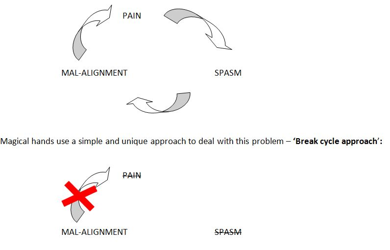

At Magical hands we recognise the need for early Physiotherapy input after a prolonged stay in hospital to aid quicker return to baseline mobility and function. Our professional physiotherapists can attend to your needs in the comfort of your home at affordable prices. We also offer our services to care home residents. Our catchment area covers Norwood green, Southall, Ealing, Ealing Broadway, Northolt, Hayes, Hillingdon, Hounslow, Osterley, Isleworth, Staines, Ashford, Hampton court, Chiswick, Brentford. Please get in touch for more information about our ‘Physiotherapy at home’ services.
We run a Physiotherapy clinic in Norwood hall, which we operate in an appointment basis. We strive hard to be as flexible as we can and offer appointments for our clients at the earliest possible time to suit your convenience. Clients can book an appointment either online or by phone. We request our clients to be fair in cancelling the appointments. We are please to cancel and re-schedule any appointments at any time, without any penalties or administration fees, up to 48 hours before your appointment.
Fitting some physical activity into your day is easier than you think. Being active is really good for your body, mind and health – And there are lots of easy ways you and your family can get moving. It is medically proven that who do regular physical activity have:
In order to keep you fit, Magical hands run a number of exercise classes for all age group designed by our physiotherapist. The exercise in a class are prescribed and performed for various reasons including strengthening muscles, improving the cardio vascular system and developing or maintaining physical skill life balance. Our physiotherapists are experts in prescribing the right exercise to resolve various problems.
Classes are held every week Saturday morning 9 to 10 AMBookings are recommended for these classes – Please call : 02079987950.
Yoga is an ancient form of exercise that focuses on strength, flexibility and breathing to boost physical and mental wellbeing. The main components of yoga are postures (a series of movements designed to increase strength and flexibility) and breathing. Yoga is an amazing tool that can help us to have better, happier lives, especially in the sedentary age we live in. Our bodies were not designed to spend hours at a time hunched over computers. They need to be stretched and moved. The meditation aspects of yoga provide us with the opportunity to find stillness and peace, which is essential for mental well-being, but hard to find in this digital age.
Yoga is for everyone: men, women, kids + teens, through to seniors, mothers-to-be and new mums. Taking your first step onto the yoga mat is an exciting new beginning. Yoga increases flexibility and reduces stress, but the practice can do more than help you twist your body and find inner peace.
we offer,
In the UK, employers have a legal duty to protect the health, safety and welfare of employees and must do whatever is ‘reasonably practicable’ to achieve this. It is estimated that sickness absence costs the UK £15 billion annually.
Magical Hands Limited ensures you to discover, understand and concentrate on healthy life style programs.
The benefits of a healthy life style depends on a lot that you can do to keep yourself healthy and feeling fit. We provide advice, support and several suggestions on eating well, Exercising and building a happy, supportive life for yourself.
Small Changes can result in a big difference to your health in over time. Some things that put you at increased risk cannot be changed; like the risk you inherit from your parents, your age and any symptoms you already have. But some things can be changed such as What you eat and your life style. Changes can be done by the following ways:
Do you often wonder why you have so much pain in your body with no reason?
Your posture could be misaligned. Improper weight bearing through the limbs and trunk could be a potential cause for your postural mal-alignment. Even a small amount of misaligned posture is enough to create a whole load of havoc in your body. Your muscles and joints are loaded with extra pressure than usual and thus they strive hard to perform their functions smoothly. How do we know this? PAIN! PAIN!! PAIN!!!
Postural mal-alignment is a cycle which needs to be broken in order to restore normal function of the muscles and joints.

Pilates classes are designed to take on a whole body approach to improve overall posture, strength and control. Classes are based on the latest research in core strength and control, and challenge participants to improve there spinal alignment in varying postures and positions. These classes are perfect for anyone who wants to improve there postural control and spinal health for work, sports and life in order to prevent injury and enhance movement patterns.
Classes are held every week Wednesday Evening 3 to 5PM
Bookings are recommended for these classes – Please call: 02079987950.
We think of massage as relaxing and holistic. Sports massage, In contrast is tailored to treat the needs of athletes, and is designed to achieve specific goals, such as increasing performance, or treating and preventing injury.
Sports and remedial massage therapy combines general and deep tissue manipulation with various forms of stretching techniques to improve muscle health and performance.
Benefits of Sports Massage:
Meditation is a balancing technique. Through balance, holistic awareness expands and the many benefits of meditation begin to unfold. It will help your mind to switch off and allow your body to get the deep rest it requires in order to release stress and stay healthy. With meditation, the physiology undergoes a change and every cell in the body is filled with more prana (energy). This result in joy, peace, enthusiasm as the level of prana in the body increases.
We offer,
This is a complete system of energy healing which is open to all. Angelic Reiki offers a profound system of healing and consciousness expansion. It is a powerful means of personal development, transformation and healing. The client is lovingly supported to let go of physical, emotional and karmic imbalances as well as ancestral issues throughout all time and space. Also to reach deeply into all areas which require rebalancing and healing.
We offer, Reiki Healing / Chakra healing for physical and emotional healing.